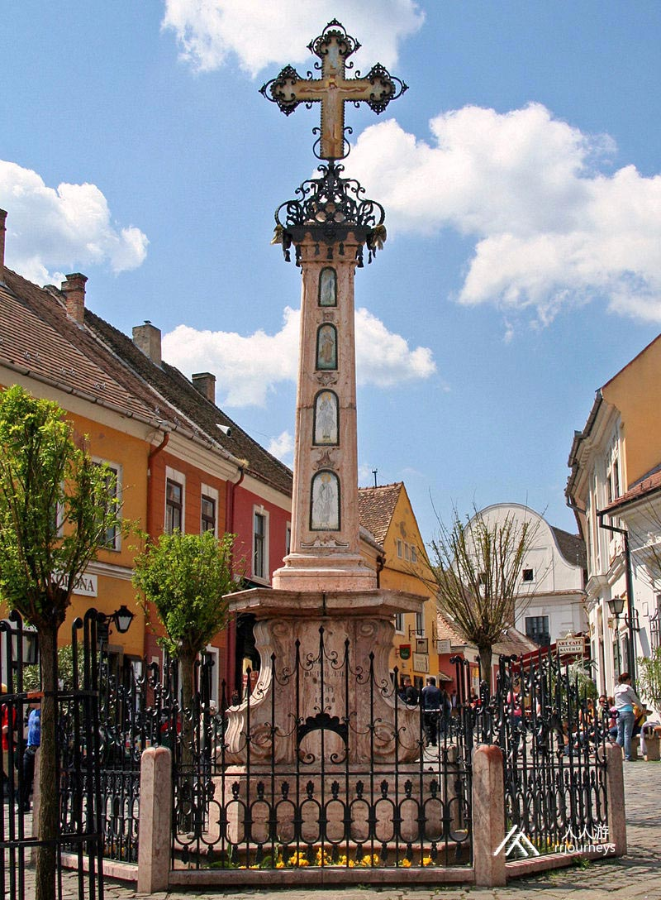
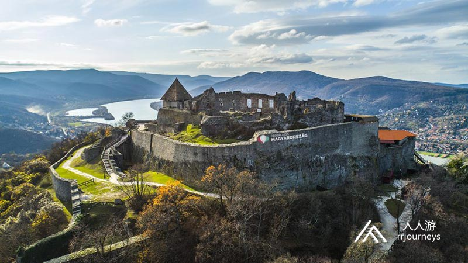
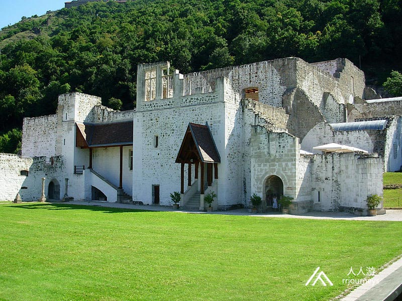
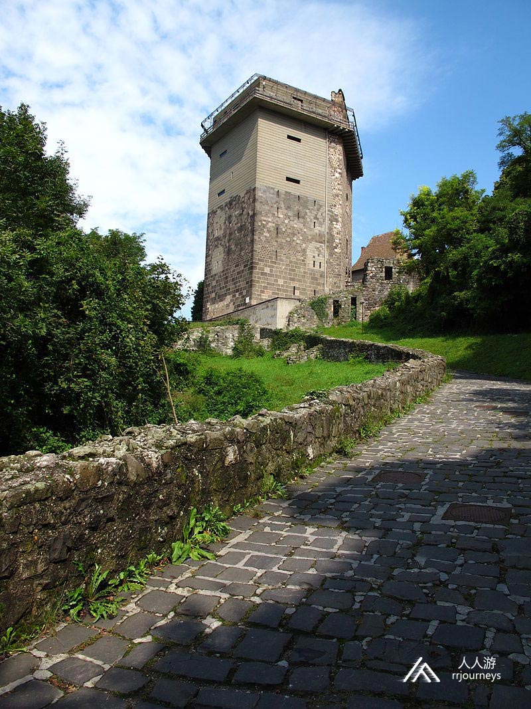
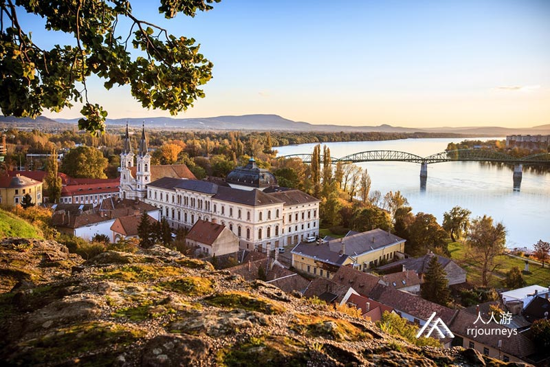
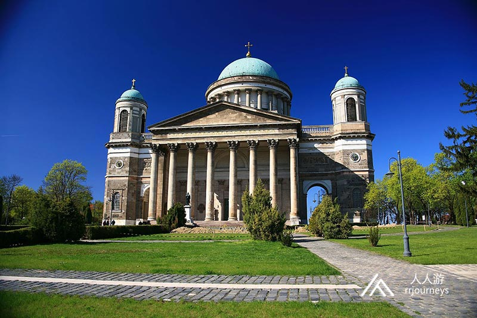

特色旅游
1日游
2-4日游
5-10日游
精品长线旅游
地址：匈牙利 布达佩斯 Budapest-Keleti, 1087
电话：0036-30-9574162
邮件：rrjourneys@gmail.com
网站：http://www.rrjourneys.com
行程路线：
多瑙河三小镇：埃斯泰尔戈姆、维谢格拉德和圣安德烈，三镇各有其自然和历史文化特点，多瑙河湾呈双S字形，它是在冰世纪时代之后形成的，河流在群山间的山谷中，把自己的河床冲刷得越来越深。
具体行程：
圣安德烈位于多瑙河弯的大门，在维谢格拉德山脉和圣安德烈区交汇处，在圣安德烈岛对面，环境优美，是一个受欢迎的游览区。直到1870年代，这座城市一直是一个小镇，人口四千。今天这座城市包括两个部分，市区和山区，后者在20世纪初成为住宅区。 几个世纪以来，小城镇的人口达到25,000。圣安德烈距离布达佩斯20多公里，是多瑙三小镇中离布达佩斯最近的一座。匈牙利华人将此地亲切地称作“山丹丹”。 在“山丹丹”深吸一口气，你会嗅到满满的艺术气息。 此外美食也是非常令人惊艳，也许在不经意间你就能够在街角偶遇可能是世界上最好吃的鹅肝酱。

景点：圣约翰教区教堂 圣约翰教区教堂，也被称为城堡教堂。圣安德烈早在1002年就是维斯普雷姆的主教，并在13世纪的头几年成为大主教的所在地。此建筑是该市最古老的建筑。教堂的四个主要建筑是1950年代中期的考古发掘发现的。 它于14世纪重建为哥特式风格，并建造了塔楼。华丽的塔楼28.91米高，顶盖于1818年被简单的帐篷屋顶所取代。塔楼下方的支柱有独特的意义，它是在1300年左右用一块石头雕刻而成的。教堂内部壁画描绘了在圣安德烈绘制圣经的场景。
2：维谢格拉德
这里号称是多瑙河上最漂亮的转角，发源于德国南部的多瑙河，流经此之前一直是自西向东，经此转角后多瑙河发生90度转弯！ 可以说是匈牙利境内多瑙河最美的地方。 由于地位独特，自古就是匈牙利皇宫和要塞的所在地，它一直是历史上最关注的焦点。自青铜时代以来，该地区就一直有人居住，在中世纪是匈牙利国王最重要的住所之一。 维谢格拉德是国内和国际旅游的热门目的地，尽管人口仅有1,700，是该国最小的城市之一，但每年接待的游客不少于300,000。
维谢格拉德被称为历史名城。虽然它只是多瑙河上的一个小城市，但它具有十分重要的政治地位。它是安茹王朝的统治者们在王位争夺战中获胜后兴建的。14~15世纪它是匈牙利国王的行宫之一。最有纪念意义的是，卡洛伊一世于1335年邀请波希米亚 国王和波兰国王，在这座小城举行了“维谢格拉德会议”，在会上，他提出政治和贸易合作的倡议，建立了第一个中欧联盟。时隔600多年的1991年，匈牙利、波兰和捷克斯洛伐克领导人再一次于维谢格拉德会晤，决定成立“维谢格拉德集团”。维谢格拉德因此是一个具有政治含义的城市。在马加什国王统治时期，它达到了其辉煌的顶峰。这里的马加什国王宫有350个房间，并用红色大理石建成喷泉。最重要的景点是所罗门塔楼，它位于古堡顶端，从那里可以控制多瑙河上的水陆交通。

景点：维谢格拉德城堡
分为上城堡和下城堡两个部分，
上城堡
蒙古入侵之后，匈牙利国王贝拉四世和他的妻子在1240至50年代建造了一个新的设防系统，新系统的第一部分是一座高山上的上城堡。在14世纪，安茹王朝，这座城堡成为皇家住所，并被新的幕墙和宫殿建筑所扩大。上城堡在14世纪至1526年之间还用于维护匈牙利皇家徽记。1544年，维谢格拉德被奥斯曼帝国占领，除了在1595-1605年的短暂时期外，它一直在土耳其手中直到1685年。该城堡被土耳其人严重破坏，此后从未使用过。
下城堡 下城堡是连接上城堡和多瑙河的设防系统的一部分。所罗门塔耸立在其中心，这是一座大型的六角形住宅塔楼，其历史可追溯至13世纪。在14世纪，塔楼周围建造了新的幕墙。在1544年的土耳其突袭中，塔楼的南部坍塌了。它的翻新仅在1870年代开始，并在1960年代完成。 目前，塔楼设有维谢格拉德国王博物馆。展览展示了从皇宫重建的哥特式喷泉，维谢格拉德的文艺复兴时期雕塑以及维谢格拉德的历史。

景点：所罗门之塔 所罗门塔是一个传统的住宅楼， 建于13世纪。塔的主要入口始于二楼。房间由圆柱壁炉加热，照明由分段的双窗户提供。四周是城垛与屋顶露台连接。影子塔也连接到住宅塔的西侧。 
3：埃斯泰尔戈姆 埃斯泰尔戈姆是匈牙利历史上的第一个首都，也是匈牙利第一位国王圣·史蒂芬诞生的地方，是罗马天主教堂，也被称为多瑙河弯最高的城市。由城堡山、水城、圣道马什山、大主教岛和镇中心的行政商业区5块组成。 最值得一去的便是有着150年历史的圣母升天大教堂。大教堂的背面，是一个可以俯瞰多瑙河绝佳之地，在这里多瑙河正好又转了一个弯。河对面就是斯洛伐克小镇，站在高地眺望对岸，你能亲身实地感受到匈牙利千年的历史沧桑变迁，不禁然人感慨万千。
景点：埃斯泰尔戈姆大教堂 埃斯泰尔戈姆大教堂，即圣母升天大教堂和圣阿达伯特大教堂。一个教堂建在了古典和古埃及风格的，在大教堂的埃斯泰尔戈姆-布达佩斯大主教管区。大教堂是欧洲最大的大教堂之一，世界范围内也具有相当大的规模。它是匈牙利最大的教堂建筑，从下教堂到圆顶范围高100米，这也是该国最高的建筑物。该建筑还是匈牙利大主教管区的主要大教堂，在布达佩斯的 圣史蒂芬大教堂旁边。 
景点：黑暗之门 埃斯泰尔戈姆的黑门是城堡山。巨大的人工斜坡下方的通道，该斜坡建在大教堂前。长度约90米。一端是老神学院，另一端是帕斯玛尼·佩特天主教大学。隧道沿东城堡墙前的前城墙线行驶。1824年，这座历史悠久的隧道在大教堂的建造过程中投入使用，是新古典主义风格。它的结构是拱形的。它之所以得名是因为缺乏适当的照明。它的任务是缩短规范房屋与牧师之间的联系，同时确保快速进入Szentgyörgymező区。建造教堂时，人为地填充了城堡山，并在东部给了一个小小的坡度。随着“黑门”进入巨大的拱形地下室系统，可以减少山丘的填充程度。黑暗之门是1956年埃斯泰尔戈姆革命事件的主要举办地。隧道于2006年进行了翻新。埃斯泰尔戈姆的黑门是城堡山。黑门是巨大的人工通道，该斜坡建在大教堂前，长度约90米。一端是老神学院，另一端是帕斯玛尼·佩特天主教大学。1824年，隧道在大教堂的建造过程中投入使用，它是新古典主义风格的建筑，结构是拱形的。它之所以得名是因为缺乏适当的照明。建造教堂时，人为的填充了城堡山，并在东部给了一个小小的坡度。随着“黑门”进入巨大的拱形地下室系统，可以减少山丘的填充程度。黑暗之门是1956年埃斯泰尔戈姆革命事件的主要举办地。隧道于2006年进行了翻新。
6天5夜乌克兰小众深度游
7天6夜克罗地亚、波黑小众
5天4夜波兰、斯洛伐克小众
四天三夜奥地利、斯洛文尼亚
匈牙利最大的滑雪场一日游
6天5夜，奥地利滑雪自由行
7天6夜，奥地利旅游滑雪自
4天3夜，奥地利滑雪自由行
Copyright 2020 www.rrjourneys.com
人人游 旅游官方网站 版权所有 All Rights Reserved